Alternator Basics
The first American-made vehicle with a factory-equipped, rectified alternator was the 1960 Chrysler Valiant. The basic model was rated at 30 amps. By 1975, Chrysler's average alternator had grown to 75 amps. Today, it is not uncommon for OEM alternators to exceed 150 amps, and a few are as big as 250 amps. If the maximum amperage isn't listed on the alternator's model tag, your dealer service department is your only recourse.
Automotive alternators consist of a rotating, claw-pole field — a rotating electromagnet. Both the north and south poles of the field are energized by a single winding. This rotating magnet (rotor) spins inside an inter-woven tri-filer wound stator coil producing a three-phase AC output. This output is full-wave rectified, producing a near ripple-free flow of current. By adjusting the amount of field current, the output can be maintained at a constant level — nominally 14 VDC (13.6 to 14.4) — up to the rated amperage of the unit.
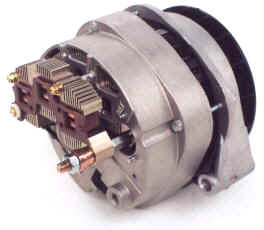
In a load-matched condition, the output power of a claw-pole alternator is proportional to the number of field ampere-turns squared (AT2). One way to increase AT2 is to use two tri-filer windings, as most OEM alternators now do. Instead of 6 diodes, they use 12 — which also allows the alternator to nearly double its output during idle conditions.
The diodes used in most late-model vehicle alternators aren't simple silicon types. They're Schottky diodes, which reduce forward voltage drop. Moreover, they're designed to break down and act like reverse-biased zener diodes should the output voltage exceed approximately 18 volts. This provides load-dump transient (LDT) protection for on-board electronics if a battery connection is lost.
The methodology used to regulate output voltage varies by manufacturer. Some alternator regulators pulse the rotor current similarly to a switching power supply; others use an analog method. The RFI from switching-type regulators sounds like a machine-gun rat-a-tat-tat that may sweep across the bandpass. If you're plagued with that particular noise, the alternator's regulator is where to start looking.
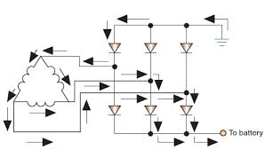
Engine Idle Shutoff
Engine Idle Shutoff (EIS) shuts down the engine during prolonged traffic stops. When traffic moves again, you release the brake, the engine restarts, and away you go. EIS requires more robust batteries, larger-capacity alternators, and a means of assuring the SLI (Starting, Lights, Ignition) battery has enough reserve capacity to restart the engine when required.
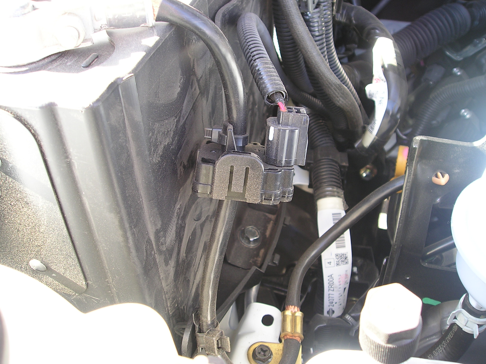
Depending on make and model, Electrical Load Detectors (ELD), Battery Monitoring Systems (BMS), and Voltage Quality Modules (VQM) are all employed and interconnected to the engine control computer. It is getting more complicated to install amateur radio gear — especially amplifiers and auxiliary batteries — in a modern vehicle without circumventing or bypassing these devices. The Wiring article is your first stop before attempting any such installation.
Alternator Ratings
High-output alternators aren't primarily for us amateurs. They're intended to defrost windows, power navigation systems, heat seats and mirrors, and drive the rest of the accessories we've grown accustomed to. More and more vehicles use electrically-driven water pumps, power steering motors, and even power brake assist. Vehicle manufacturers know the alternator will only be delivering its full output for short durations, so they cut every corner they can.
It is not uncommon for a 160 amp alternator to have a continuous duty cycle of less than 90 amps. Under the extra load imposed by high-power mobile applications, the alternator and/or the interconnect wiring may overheat. This is especially true of low-content (minimally accessorized) vehicles.
If you do a lot of operating while idling, remember that all alternators have an engine speed/temperature derating curve. Air conditioning, cooling fans, headlights, and slow engine speeds all add up to low alternator reserves. When in doubt, err on the side of safety and hang up the mic.
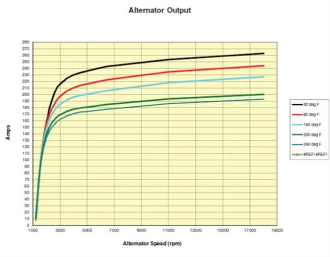
If you're contemplating purchasing a new vehicle, consider a heavy-duty electrical system if one is available. The major manufacturers offer heavy-duty systems on mid-to-large vehicles — sometimes called Police Packages, Taxi Service Packages, or in Ford's case, Modified Wiring Upfit Packages. These packages include a bigger alternator and battery, additional fused power circuits, and on Ford's Upfit package, a pre-drilled and wired 3/4-inch hole in the roof. Though intended for signage, it's perfect for installing an NMO mount.
Measuring Capacity
In the old days, most vehicles had ammeters connected between the battery and generator. With modern electronically controlled alternators that always put out exactly the right amount of current, the ammeter loses its effectiveness — it would almost always show "0."
A DC voltmeter is far more useful. If the fast-idle voltage (with HVAC and lights turned on) doesn't stay above 13 VDC while you're transmitting, you might not have enough reserve power for your transceiver.
A quick way to estimate available reserve power: if your vehicle has a rear window defroster, you have about 30 amps of reserve when it isn't in use. That's enough for any of the late-model 100-watt transceivers (FT-857, IC-7000, TS-480, etc.). If you run an amplifier at 500 PEP watts out, peak draw is about 100 amps — you'll need at least 70 amps of reserve from the alternator alone.
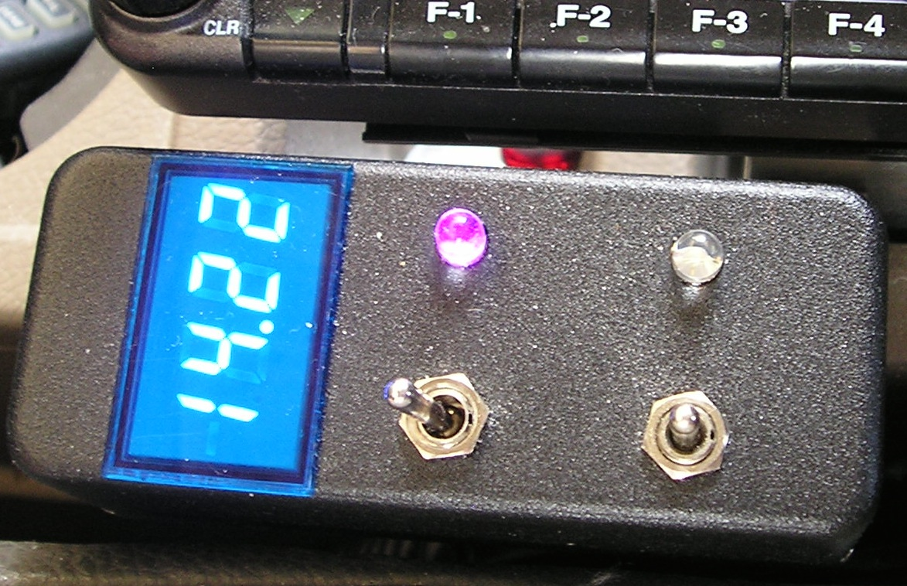
Alternator Whine
Alternator whine can be caused by a large AC ripple component — a rare occurrence today, one that typically triggers the MIL (Maintenance Indicator Light). Almost without exception, alternator whine is caused by a ground loop. In most cases the whine is only apparent on the transmitted signal, which is another indicator of a ground loop problem. The most likely culprits: a magnetic-mount antenna or a poor RF ground return (open coax shield connection).
A related issue is RFI generated by the rectifier diodes themselves. It sounds a lot like ignition and/or injector RFI, making it difficult to diagnose. You almost never see this with late-model stock alternators, but it's common with cheaply rebuilt aftermarket alternators.
Several manufacturers sell power cable filters — sometimes called brute-force filters — advertised to cure alternator whine. The truth: they only mask the real problem. A brute-force filter is a sure sign you didn't wire your installation correctly, or you're using a mag-mounted antenna. Worse, they add about 0.5 volts of drop no matter how large they are. Similarly, tightly twisting the radio's power cable with a drill does not fix the problem — the CAT5 twisted-pair technique works for balanced circuits. Amateur radio power cables are not balanced.

Auxiliary Batteries
If you run a nominal 100 to 200-watt mobile transceiver, you probably don't need an auxiliary battery. For those running high power, an auxiliary battery is almost a necessity — unless you want to use $5-per-foot welding cable for the interconnections. The math is straightforward: it's about I2R losses and minimizing IMD products. See the Amplifiers and Wiring articles for more detail.
All lead-acid batteries generate hydrogen gas during normal operation, and that gas becomes excessive during overcharge. Hydrogen is very explosive — even a minor spark can ignite it. The electrolyte is sulfuric acid, and an explosion isn't a pretty sight. Flooded batteries must not be used in enclosed spaces like a trunk. Use AGM (Absorbent Glass Mat) instead. AGM batteries can outgas too, but the hydrogen is absorbed by the glass mat unless you overcharge them.
Any auxiliary battery should be installed in a battery box and properly restrained. The rule of thumb for battery restraints is 6G lateral and 4G vertical. The last thing you want is a 60-pound battery flinging acid around the interior of your vehicle.
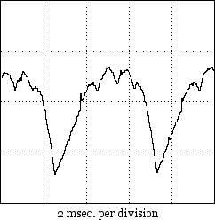
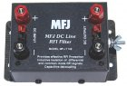
Do not assume circuit breakers are a substitute for fuses. Under a direct short, a typical lead-acid battery with an ESR of 0.003Ω will supply over 3,000 amps. That can weld the contacts of a circuit breaker together and cause the battery to self-destruct. Use properly rated fuses, located as close to the battery terminal as possible.
When connecting or disconnecting batteries, remove the negative lead first and install it last. Keep plastic post caps on until you actually make the connections. And never mix battery chemistry types — do not interconnect lead-acid and lithium iron phosphate batteries, even with an isolator in the circuit. Every battery chemistry has its own charging parameters.
Batteries designed for marine applications are not the correct choice for mobile amateur radio. Marine batteries are designed to maintain an 80% state of charge after sitting uncharged for 12 months — they are a form of SLI battery, but typically have less starting amperage and less reserve power than a true SLI. In high-power mobile installations, what you need is peak current capability from an AGM SLI battery, not long-term reserve capacity from a deep-cycle unit.
Farad Capacitors
Farad-sized capacitors, sold in the automotive sound marketplace from approximately 1 to 5 Farads, have an almost mythical following. Let's be direct: they are not a voltage-drop fix for an under-powered or inadequately-wired installation. They do not extend battery life or state of charge. The reason is simple — they're not a power source. They're a power drag.
Farad-sized capacitors have an ESR somewhat higher than a lead-acid battery's, yet they cost nearly as much. Their efficiency hovers around 90%. They're over-voltage, dead-short, and fast-charging intolerant. Abuse one, and it will fail with spectacular results. And for those who believe they'll cure alternator whine: they won't. Fusing the capacitor (which you must do) doubles its effective ESR, further eroding efficiency. The best advice: forget about them entirely.
Battery Isolators
The only time batteries need to be isolated in a mobile application (other than RVs) is for portable operation. The use of isolators in high-power applications should be discouraged. Simple diode isolators will always have a forward voltage drop of about 1 volt, and they can play havoc with the charging circuitry in some vehicles, triggering the MIL.
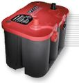
If you must use an isolator, FET-switch based units from Hellroaring or Perfect Switch are the best options. They lower forward voltage drop, are remotely controllable, and have no contacts to fuse together in a dead-short scenario. Drawing current over their rating causes them to disconnect and require a reset — about as fail-safe as you can get. Proper fusing is still required.
Most automobile manufacturers use some form of Battery Monitoring System (BMS). Suddenly connecting a second battery can cause fault codes to be written to OBD-II memory, which will illuminate the MIL. It can also cause the main battery fuse (typically ~120 amps) to blow. Carry a spare — and be aware that the battery fuse in most modern vehicles is an OEM proprietary part. Read that as expensive.
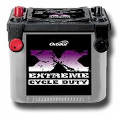
Battery Imbalance
Almost no matter what you do, eventually there will be a voltage differential between the main SLI battery and an interconnected second battery. The causes are subtle — small resistances in the wiring, fuse holders, fuses themselves, and even the connections. You wouldn't think a few milliohms could make a difference. It can.
All connections should be checked regularly to make sure they're tight, not frayed, corroded, or showing signs of overheating. Here is how to check them properly:
Never use an ohmmeter to check connections that are under power. Instead, set your DVM to its lowest voltage setting (auto-range is fine). Measure across connections: between the battery post and the battery clamp, across a fuse holder, or any screwed, bolted, or clamped connection. Any reading over about 0.015 volts is excessive. Any connection should be cleaned and/or re-tightened to reduce the voltage differential to less than 0.01 volts per connection. Yes, it is that important.
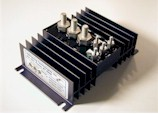
In high-power installations, the initial current draw from the rear battery and the feed from the alternator will be roughly equal. As the surface charge of the rear battery dissipates, the ammeter reading will appear to reverse (negative reading). This is normal — the battery is now being charged. The rear battery is there to handle peak loads; the real power supply is the alternator itself.
Battery Boosters
Factory-installed voltage booster systems, used to maintain adequate voltage to on-board lighting and infotainment units, should never be used to power amateur radio gear. Doing so will void all written and implied warranties.
For those who want to maintain 13.8 volts to the radio as battery voltage sags, battery boosters (also called DC-DC converters or voltage regulators) act like switching power supplies — the battery voltage may drop, but the output remains steady.
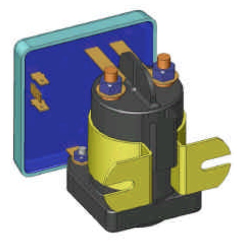
Most battery boosters do not have over-voltage cutoff. More importantly, any nominal 12-volt lead-acid battery is considered discharged when its voltage drops to 10.5 volts under its C-rated load. Discharging below this threshold will drastically shorten battery life. Without low-voltage protection built into the booster, the usual end result is a ruined battery. Drawing the battery voltage down past a preset point can also cause the BMS to illuminate the MIL and write a code to the OBD-II.
Is a battery booster needed? There's no clear-cut answer. For portable operation, they have a definite use. In mobile-in-motion operation with correctly sized wiring and an adequate alternator, their use is questionable. If you run an amplifier, the cost of a 120-amp unit is substantial — and with adequate wiring and charging circuitry, the need may be moot.
Modern Considerations: EVs, Hybrids, and 48-Volt Systems
Everything above covers the traditional 12-volt lead-acid world. Modern vehicles are increasingly departing from that baseline in ways that directly affect mobile amateur radio installations.
48-Volt Mild Hybrid Systems
Many current production vehicles use a 48-volt mild hybrid system alongside the traditional 12-volt bus. The 48-volt bus powers the starter-generator, electric supercharger, and other high-demand accessories. Your amateur radio transceiver connects to the 12-volt bus as always — but the 12-volt bus is now supplied by a DC-DC converter stepping down from 48 volts, not directly from the alternator charging the battery.
This matters for two reasons. First, the DC-DC converter regulates voltage more tightly than a traditional alternator/battery combination, which may actually benefit transceiver performance. Second, the converter itself is a switching device that generates RF hash in its own right. Proper installation technique — short power leads, direct battery connections, and adequate ferrite suppression — remains essential.
Lithium Starter Batteries
Lithium iron phosphate (LiFePO4) starter batteries are appearing in some production vehicles and are widely available as aftermarket replacements. They are lighter and hold voltage more stably under load than lead-acid types. However, they have a narrower charging voltage range, require a specific charging profile, and cannot be mixed with lead-acid batteries in a parallel configuration. If your vehicle or planned auxiliary battery uses lithium chemistry, the BMS considerations discussed above become even more critical.
EV Accessory Power
Modern EVs and PHEVs include a conventional 12-volt accessory bus, sourced from a DC-DC converter drawing from the high-voltage propulsion battery. The power available from this 12-volt bus is more than adequate for a transceiver — but the caveats in the Hybrid & EV article about high-voltage isolation, warranty implications, and RF noise from the inverter system all apply before you start planning your installation.